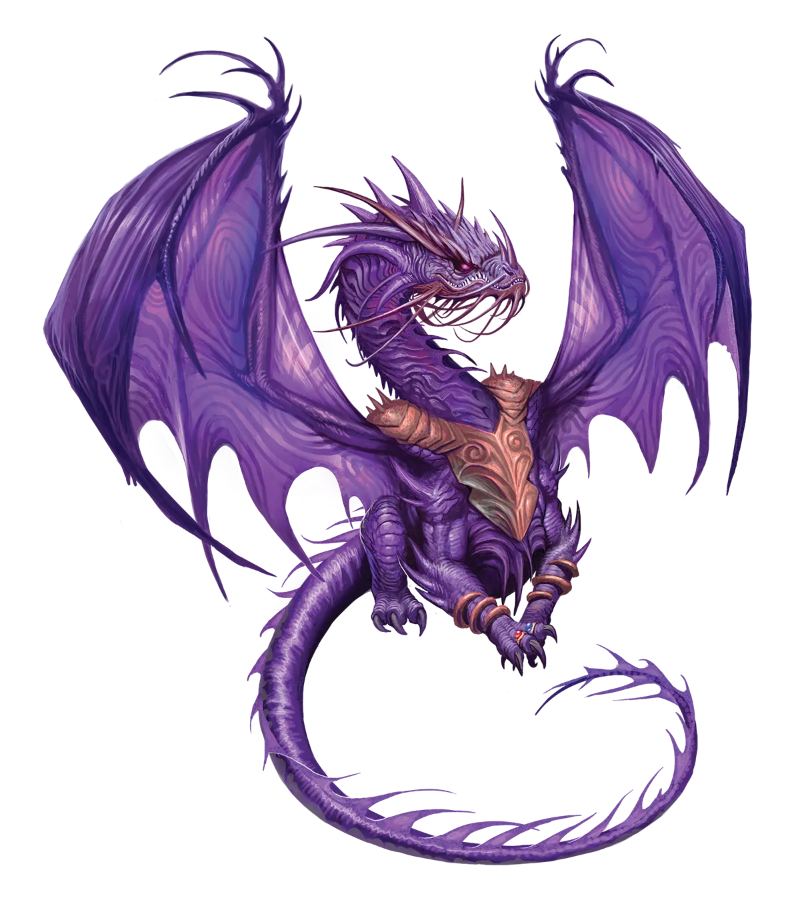
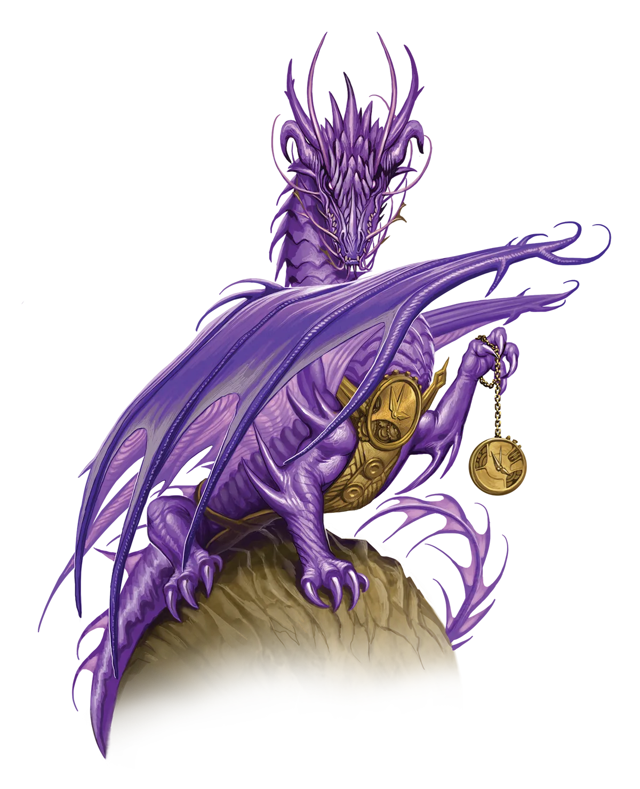

时代错乱
时光龙有一种不寻常的信念，认为它们在某种程度上是历史的“守护者”。深入思考这意味着什么，你就会意识到它们相信存在一个“正确”版本的历史，而其他替代版本则是“错误”的。这是一种危险的哲学，可以被用来以维护历史“正确”道路之名，为几乎任何暴行辩护。因此，不要被时光龙所谓绝对中立的言辞所蒙蔽。它们并非中立；它们已有所偏爱，并且会为自己的信念而杀戮。
时光龙 Time Dragon |
|
|
作为历史守护者的角色，每一头时光龙都对永恒之光仪式拥有独特视角。尽管它们对仪式的态度从无限欢欣到公开敌视各不相同，但所有时光龙都认同，永恒之光的创造者必定是一头时光龙。这个仪式借助龙类的未来加速其当下的成长，具有时光龙精通时间魔法的所有特质。这些龙声称，如果永恒之光的起源模糊不清，那是因为创造者是来自太初过去或遥远未来的时光龙。 虽然时光龙对仪式的起源看法一致，但它们对是否应该进行仪式却争论激烈。永恒时光龙相信，创制此仪的龙绝不会无缘无故冒险危害时间流。这些龙举行永恒之光，是为了迎接一场它们认为必然到来的灾变。另一方面，传统时光龙指出，即使是时光龙也会迷失方向，因此对仪式匿名创造者盲目信任实属鲁莽。它们力劝所有龙类思考永恒之光如何以不自然的方式扭曲它们的未来。通过将所有潜能浓缩于单一时刻，龙类可能永远失去本可沿着自然时间线成长而获得的传说传奇力量。永恒时光龙认为这些论点缺乏说服力。它们坚称，传统派拒绝仪式的效益，正如它们声称永恒派无视其风险一样。 鉴于双方对此问题的确信不疑，永恒派与传统派时光龙之间的争论往往以暴力收场也就不足为奇了。通常，这种冲突的导火索是传统派认为某头永光龙的行为威胁到时间线，从而谴责其为可憎的畸形之物。不用说，如此激烈的反应与时光龙著称的冷静沉着形成了鲜明对比。 永恒之光仪式对时光龙的影响与其他龙类不同。虽然有些时光龙保持着永恒的耐心，但许多其他时光龙在经历仪式后经历了惊人的性格转变。这些龙认识到永恒之光要求在缩短的时间内接受激烈挑战，促使它们去寻找拥有类似紧迫感的盟友。它们常常从一个冒险匆匆赶往下一个，即使停下来休息更为明智也继续向前。时光龙比任何其他永光龙都更感受到死亡逐渐逼近。死亡――或许是导致永恒之光诞生的那场大灾难――即将来临，届时，这头龙必须做好准备。 时代错乱 时光龙有一种不寻常的信念，认为它们在某种程度上是历史的“守护者”。深入思考这意味着什么，你就会意识到它们相信存在一个“正确”版本的历史，而其他替代版本则是“错误”的。这是一种危险的哲学，可以被用来以维护历史“正确”道路之名，为几乎任何暴行辩护。因此，不要被时光龙所谓绝对中立的言辞所蒙蔽。它们并非中立；它们已有所偏爱，并且会为自己的信念而杀戮。 时光龙特质 Time Dragon Traits 你出身于一脉守望历史长河的时光龙世系。 |
  |